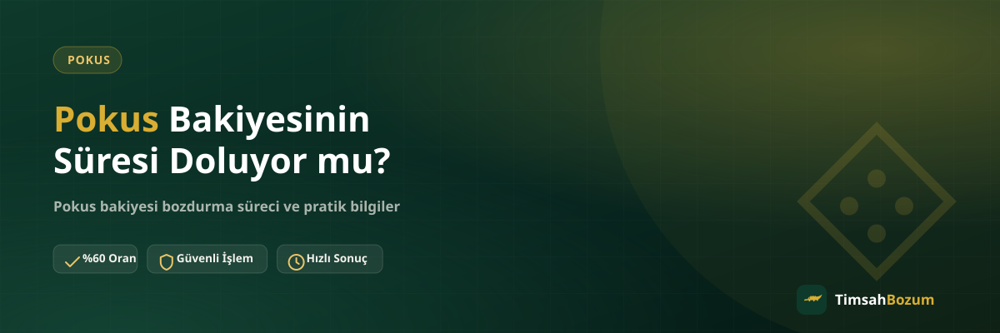

Pokus bakiyesi hesapta bir süre kullanılmadan kaldığında, akla gelen en doğal soru bu bakiyenin bir son kullanma tarihinin olup olmadığı. Bazı dijital bakiye sistemlerinde süre sınırı uygulanırken bazılarında böyle bir kısıtlama bulunmaz, bu da kullanıcıyı belirsizlikte bırakabilir. Bu yazıda süre konusunu nereden öğrenebileceğini ve netleşmeden önce elindeki bakiyeyi nasıl değerlendirebileceğini anlatıyoruz.
Pokus Bakiyesi ve Süre Konusu Neden Önemli?
Dijital platformlarda biriken bakiyeler bazen uzun süre kullanılmadan hesapta kalır. Bu durumda akıldaki soru işareti büyür: bakiye orada sonsuza kadar durur mu, yoksa bir noktada geçerliliğini kaybeder mi? Bu sorunun cevabı platformun kendi politikasına bağlı olduğu için genel bir kural vermek yerine, bakiyeni nasıl kontrol edebileceğini ve süre netleşmeden ne yapabileceğini bilmek daha faydalı.
Pokus Bakiyesinin Bir Süre Sınırı Var mı?
Bakiye tabanlı birçok dijital hizmette süre politikası zamanla değişebilir veya hesap tipine göre farklılık gösterebilir. Bu yüzden "Pokus bakiyesi belli bir süre sonra silinir" şeklinde kesin bir rakam vermek yanıltıcı olur. Net ve güncel bilgiye en sağlıklı şekilde platformun kendi hesap ekranından veya resmi kanallarından ulaşılır. Emin olmadığın bir durumda varsayımda bulunmak yerine güncel bilgiyi doğrulamak en doğru adımdır.
Bakiye Süresinin Durumu Nereden Kontrol Edilir?
Hesabındaki bakiyenin güncel durumunu ve varsa süreyle ilgili bir uyarıyı görmenin en güvenilir yolu, doğrudan kendi hesabına giriş yapıp ilgili bölümü incelemektir. Orada net bir tarih veya bildirim görürsen, bu konuda elindeki en doğru bilgi budur. Hesap üzerinde böyle bir bilgi görünmüyorsa veya emin olamıyorsan, bozum süreciyle ilgili sorularını WhatsApp hattımızdan da sorabilirsin; güncel bilgiyi orada teyit edebilirsin.
Süresi Dolmadan Bakiyeni Değerlendirmenin Yolları
Elinde kullanmayı planlamadığın bir Pokus bakiyesi varsa, onu süresiz şekilde hesapta bırakmak yerine değerlendirmek daha pratik bir seçenek. Bakiye tabanlı bir hizmet olduğu için bu bakiyenin tamamını ya da bir kısmını bozdurmak mümkün, yani her durumda bakiyenin tümünü harcamak zorunda değilsin. Pokus bozdurma sayfamızdan güncel oranı öğrenip işlemi başlatabilirsin.
Süresi Dolan Bir Bakiye Geri Alınabilir mi?
Bir bakiyenin süresi gerçekten dolmuşsa bu durumu geri almak platformun kendi politikasına bağlıdır ve bozum hizmeti bu noktada bir çözüm sunmaz; çünkü bozum işlemi yalnızca geçerli, kullanılabilir bir bakiye üzerinden yürütülür. Bu yüzden süre konusunda şüphen varsa, bakiyeni süre dolmadan değerlendirmek en güvenli yaklaşım olur.
Süre Dolmadan Pokus Bakiyesi Bozdurmak Güvenilir mi?
Güncel ve geçerli bir bakiyeyi bozdurmak, bakiye tabanlı hizmetlerde standart bir işlem. Güvenilir bir kanaldan işlem yaptığından emin olmak için üyelik, form doldurma veya hesap şifresi istenmemesine dikkat et; TimsahBozum'da bu bilgiler talep edilmez. Tek ihtiyacın, güncel bakiyeni gösteren okunaklı bir ekran görüntüsü ve WhatsApp üzerinden iletişim.
Pokus Bakiyesi Bozdurma Süreci Nasıl İşler?
Süreç WhatsApp hattımızdan (+90 543 887 21 71) yazmanla başlar. Güncel bakiyeni gösteren ekran görüntünü paylaşırsın, oranı teyit edersin ve onay sonrası ödeme WhatsApp üzerinden görüşülen yöntemle yapılır. Üyelik, form ya da kimlik belgesi gerekmiyor; hesabına erişim de istenmiyor. Pokus bozdurma sayfamızdan güncel oranı ve süreci inceleyebilirsin.
Pokus Bakiyesi ile Kod Tabanlı Hizmetler Arasında Süre Açısından Fark Var mı?
Razer Gold veya iTunes gibi kod tabanlı hizmetlerde elinde tek kullanımlık bir kod veya PIN bulunur; bu kodun kendi üreticisi tarafından belirlenen bir geçerlilik durumu olabilir ve kod tam değeri üzerinden tek seferde bozdurulur, kısmi bozum söz konusu değildir. Pokus gibi bakiye tabanlı hizmetlerde ise durum farklı işler: hesabında biriken tutarın süresiyle ilgili bir uyarı görürsen bunu dikkate almalısın, ancak bakiyenin tamamını bozdurmak zorunda değilsin, istediğin bir kısmını değerlendirip kalanını hesapta bırakabilirsin. Bu ayrımı bilmek, hangi hizmete hangi bilgiyle başvurman gerektiğini netleştirir ve süre konusunda yanlış bir beklentiye kapılmanı önler.
Birden Fazla Bakiyen Varsa Süre Takibini Nasıl Kolaylaştırırsın?
Elinde Pokus bakiyesinin yanı sıra başka bir hesapta da kullanılmayan bir bakiye veya kod varsa, her birinin kendi platformundaki süre ve geçerlilik durumunu ayrı ayrı kontrol etmek faydalı olur. Bu şekilde hangi bakiyeyi öncelikli olarak değerlendirmen gerektiğine karar verebilirsin. Birden fazla bakiye veya kodu aynı anda bozdurmak istiyorsan, bunları tek mesajda toplu şekilde WhatsApp hattımıza bildirmen süreci hızlandırır; her birini ayrı ayrı göndermek yerine hepsini bir arada paylaşmak hem senin hem karşındaki hattın işini kolaylaştırır.
Bozdurmadan Önce Dikkat Etmen Gereken Noktalar
İşleme geçmeden önce ekran görüntüsünün güncel ve okunaklı olduğundan, tutarın net göründüğünden emin ol. Eksik veya bulanık bir görüntü paylaşımı işlemi geciktirir, çünkü bilgiyi tekrar istemek gerekir. Ayrıca oranların piyasa koşullarına göre güncellenebileceğini unutmayıp işlem öncesi güncel oranı WhatsApp'tan teyit etmek, hem senin hem karşı tarafın aynı bilgiye dayanmasını sağlar. Bilgini yalnızca resmi WhatsApp hattımızdan paylaş; başka bir numaradan "TimsahBozum" adına ulaşıldığını düşünüyorsan bilgi paylaşmadan önce bu numaradan teyit iste. Hattına gelen bir SMS doğrulama kodu asla senden istenmez, böyle bir talep gelirse işlemi durdurup bilgi paylaşma.
Sık sorulan sorular
İlgili Yazılar
- Pokus Bakiyesi Nedir, Nasıl Oluşur?
- Kullanılmayan Pokus Bakiyesini Değerlendirmenin Yolları
- Pokus Hangi Oyunlarda Kullanılır?
Pokus bakiyenin süresiyle ilgili net bilgiyi kendi hesabından veya resmi kanallardan teyit etmek en güvenli yol. Elinde değerlendirmeyi planladığın bir bakiye varsa, güncel oranı öğrenmek için WhatsApp hattımıza yazarak hemen başlayabilirsin.